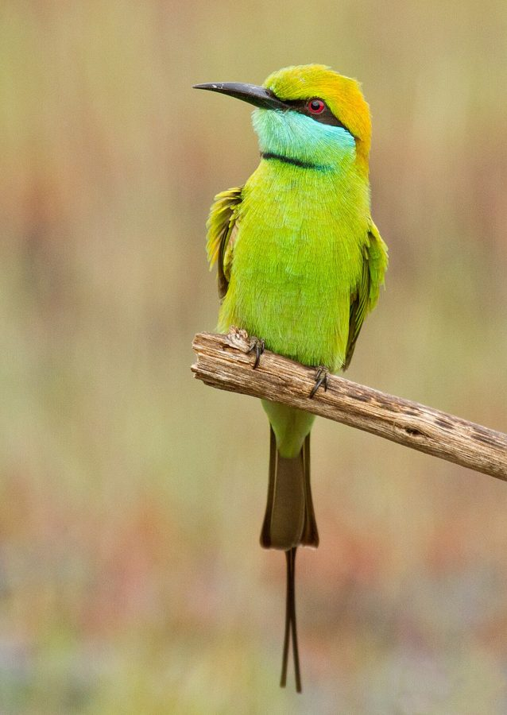

हरा पतरंगाAsian Green Bee-eater
Merops orientalis · Meropidae · BRD-0032

- Scientific name
- Merops orientalis Latham, 1801
- Family
- Meropidae
- Hindi
- हरा पतरंगा
- Status here
- native
- IUCN
- LC
When to look कब देखें
Present all year.
हरा पतरंगा / Asian Green Bee-eater
Merops orientalis Latham, 1801 — Meropidae
हरा पतरंगा (एशियन ग्रीन बी-ईटर) — पूर्वी उत्तर प्रदेश के खुले खेतों, बागों और झाड़ीदार इलाकों में पाया जाने वाला एक छोटा, आकर्षक और चमकदार पन्ने जैसे हरे (emerald-green) रंग का निवासी पक्षी है। इसकी सबसे बड़ी पहचान इसके सिर पर भूरा-नारंगी (rufous) रंग, आँख पर काली पट्टी (black mask) और इसकी पतली लंबी पूँछ के बीच से निकले दो लंबे काले सुई जैसे पंख (central tail streamers) हैं। यह बिजली के तारों या बाड़ पर बैठकर हवा में उड़ते हुए कीड़ों, विशेष रूप से मधुमक्खियों और ततैयों को पकड़ने में माहिर है। यह शिकार को डंडी पर मारकर उसका डंक निकाल देता है। यह मिट्टी के ऊंचे टीलों या नदी के रेतीले किनारों पर गहरी क्षैतिज सुरंगें बनाकर घोंसले बनाता है।
Quick Identification त्वरित पहचान
| Feature | Description |
|---|---|
| Size | Small, slender bird (18–20 cm excluding tail streamers of 5–7 cm); very agile |
| Colouration | Bright emerald-green plumage; golden-brown crown; black collar on throat |
| Eyes | Deep crimson-red irises, bordered by a distinct black mask running through the eye |
| Tail | Rounded tail with two long, narrow, thread-like central feathers (streamers) |
| Bill | Slender, long, curved, and black; optimized for grabbing flying insects |
| Behaviour | Perches on low wires; flies out to catch insects in mid-air and returns to same spot |
Field tip: Look on wire fences or low tree branches in open fields. Watch for a bright green bird making quick, acrobatic looping flights to catch insects, returning to its perch to beat the prey before swallowing it.
Morphology आकारिकी
Biometrics (typical measurements in the northern Indian plains):
| Measurement | Range |
|---|---|
| Total length | 180–200 mm (excluding streamers) |
| Wing (flattened chord) | 90–98 mm |
| Tail | 70–80 mm (streamers add 50–70 mm) |
| Tarsus | 9–11 mm |
| Bill (culmen from base) | 27–32 mm |
| Weight | 15–20 g |
Plumage: The body is primarily bright grass-green. The crown and nape have a rich golden-rufous wash. A black line (mask) runs from the base of the bill, through the eye, to the ear coverts. The chin and throat are pale blue-green, bordered below by a narrow black collar (gorget). The underparts are pale green. The wings are green with blackish tips. The tail is green with two long, narrow, black needle-like central feathers.
Bare parts: The bill is long, slender, curved, and black. The irises are red. The short legs and feet are grey-brown.
Vocalisations
Green Bee-eaters call frequently when flying and perched.
- Contact Call: A pleasant, soft, trilling pirree-pirree or tree-tree-tree, repeated in flight.
- Alarm Call: A sharp, rapid tit-tit-tit, given when a bird of prey (like a Shikra) approaches.
Ecological Role पारिस्थितिक भूमिका
Specialized aerial insectivore.
- Hymenopteran predator: They feed heavily on flying Hymenoptera (bees, wasps, ants). They neutralize bee stings by repeatedly rubbing the abdomen of the insect against a hard branch.
- Crop protector: They catch insect pests in flight, protecting crops, though they can occasionally prey on domestic honey bees (Apis cerana).
- Colonial excavator: Dig nest tunnels in sandy banks, contributing to soil turnover (bioturbation) in riverine areas.
Life Cycle / Phenology जीवन चक्र
- Breeding season: March to June, peaking during the dry summer.
- Nesting: They nest in colonies, excavating horizontal tunnels in dry, sandy earthen banks, river cuttings, or sand dunes.
- Tunnel length: The burrow is 1 to 2 meters long, ending in a nesting chamber.
- Clutch size: 4 to 8 small, round, white eggs.
- Incubation: 18–22 days, shared by both parents.
- Fledging: Both parents feed the young; chicks fledge in 26–30 days.
Host Plants or Prey आहार
Primary food items:
- Hymenoptera: Honey bees (Apis florea, Apis cerana), wild wasps, and flying ants.
- Diptera & Odonata: Houseflies, horseflies, and small dragonflies.
- Lepidoptera: Small butterflies and moths.
Predators / Natural Enemies शत्रु
- Raptors: Shikra (Accipiter badius) is their major threat, capturing them in mid-air.
- Reptiles: Sand snakes and monitor lizards climb earthen banks to enter nest tunnels.
- Insects: Ants can invade nesting tunnels and prey on hatchlings.
Agricultural / Human Relevance कृषि प्रासंगिकता
Farming ally. Green Bee-eaters are helpful to farmers by consuming crop pests in flight. However, they are occasionally disliked by beekeepers (apiculturists) in UP because they gather near commercial hives to prey on honey bees.
Their colonial nesting sites in sandy banks are vulnerable to sand mining operations along the Ghaghra river.
Expected Locally स्थानीय रूप से अपेक्षित
Not a field record. Written from published accounts for eastern Uttar Pradesh. No confirmed local sighting yet — if you have seen it, that is what the atlas needs.
अभी तक स्थानीय पुष्टि नहीं। यह विवरण प्रकाशित स्रोतों से है, किसी अवलोकन से नहीं।
A very common resident throughout Basti district. They are regularly seen perched in small groups of 3–5 birds on electrical cables running through mustard and sugarcane fields. During the summer heat, they can be seen resting close together in shady orchards. Their nesting tunnels are common along sandy roadside embankments.
Distribution वितरण
Global range: Widespread across North Africa, the Middle East, the Indian Subcontinent, and Southeast Asia.
In India: Widespread resident in plains and low hills.
In Uttar Pradesh: Common state-wide in all agricultural and semi-arid zones.
In Basti district / eastern UP: Abundant year-round near croplands and riverbanks.
Research Questions शोध प्रश्न
Anyone can investigate these | कोई भी इन प्रश्नों की जाँच कर सकता है
- How many seconds does a Green Bee-eater take to process a bee (remove the sting) before eating it? — Record foraging videos and count strike-to-swallow durations.
- Do local populations prefer nesting in riverbank sand over roadside soil banks? — Catalog nest locations and analyze soil texture.
- What is the capture success rate of Green Bee-eaters during the dry pre-monsoon vs. wet monsoon season? — Compare foraging strike successes.
- How do Green Bee-eaters coordinate their calling when returning to communal roosts at sunset? / पतरंगे सूर्यास्त के समय सामूहिक बसेरों पर लौटते समय अपनी पुकार का समन्वय कैसे करते हैं? — Monitor vocal activity at roost sites.
- Does the proximity of commercial bee hives increase the density of local bee-eater populations? / क्या वाणिज्यिक मधुमक्खी पेटियों की निकटता स्थानीय पतरंगों की आबादी को बढ़ा देती है? — Count bird densities near apiaries vs. control areas.
Similar Species मिलती-जुलती प्रजातियाँ
| Species | Key Difference | हिंदी |
|---|---|---|
| Blue-tailed Bee-eater (Merops philippinus) | Much larger (30 cm); blue rump and tail; brown throat; visitor to wetlands | बड़ा पतरंगा — नीली पूंछ और भूरा गला |
| Chestnut-headed Bee-eater (Merops leschenaulti) | Bright chestnut head and mantle; lacks tail streamers; restricted to forests | चेस्टनट-हेडेड बी-ईटर — सिर चमकीला भूरा-लाल |
Field rule: Small size, emerald-green body, golden-rufous wash on crown, black neck collar, red eyes, and two long black tail-streamers.
Taxonomy & Classification वर्गीकरण
Original description. John Latham described the Asian Green Bee-eater as Merops orientalis in 1801 in his work Index Ornithologicus, Supplementum (p. 33). The type locality was India. The genus name Merops is the ancient Greek word for bee-eater. The specific name orientalis is Latin for "eastern," referring to its Asian distribution.
Subspecies. Multiple subspecies are recognized. The subspecies found in UP is:
| Subspecies | Authority | Range | Notes |
|---|---|---|---|
| M. o. orientalis | Latham, 1801 | Northern India, Nepal, Bangladesh | UP subspecies; nominate form; bright green with gold wash on head |
Family and order placement. Placed in the order Coraciiformes, family Meropidae.
Phylogenetic notes. Merops orientalis has recently been split into several species; the South Asian bird remains Merops orientalis sensu stricto (Asian Green Bee-eater).
IUCN status rationale. Listed as Least Concern (LC) due to its massive distribution range, high abundance, and stable population trends.
Photo Gallery फोटो गैलरी
References संदर्भ
- Latham, J. (1801). Supplementum Indicis Ornithologici. Leigh & Sotheby, Londini, p. 33. [original description]
- Ali, S. & Ripley, S. D. (1999). Handbook of the Birds of India and Pakistan. Vol. 4. Oxford University Press, New Delhi.
- Grimmett, R., Inskipp, C. & Inskipp, T. (2011). Birds of the Indian Subcontinent. 2nd ed. Christopher Helm, London.
- Sridhar, S. & Karanth, K. P. (1993). Helpers at the nest of the Green Bee-eater Merops orientalis. Journal of the Bombay Natural History Society, 90(3), 499-502.
- BirdLife International (2024). Merops orientalis. IUCN Red List of Threatened Species. Ver. 2024.
- GBIF Occurrence Data — Merops orientalis, Uttar Pradesh (2010–2025).
Source file: species/fauna/birds/asian_green_bee_eater.md